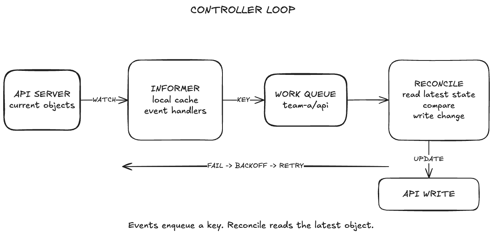
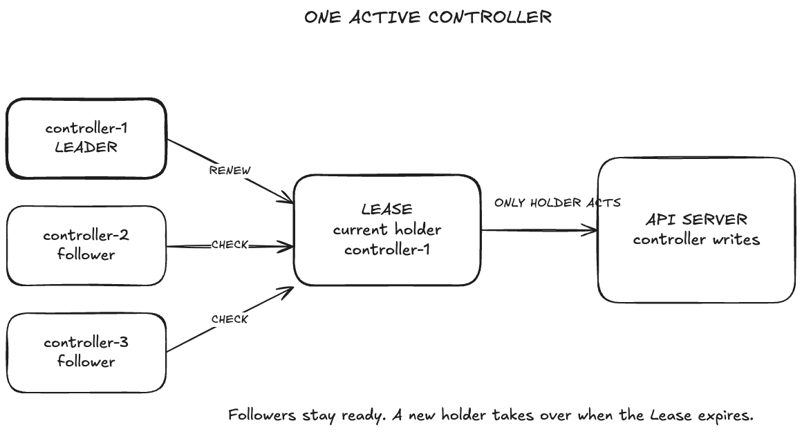

Module 4 · Kubernetes internals
Scheduling and Controllers
How Kubernetes chooses a node and keeps workloads moving toward the desired state.

Module map
What We Will Explain in This Module
Follow a Pod from scheduling through controller action and recovery after node failure.
Scheduling cycle
Follow one Pod from the queue to a binding.
Placement rules
Resources, labels, taints and scoring.
Pending Pods
Read the event and choose the correct check.
Controller internals
Informer, queue, reconcile, backoff and Lease.
Node failure
Node health, taints, timers and eviction.
Lab proof
KWOK, FailedScheduling and TaintManagerEviction.
Lesson 1
How Kubernetes Schedules a Pod
From an empty spec.nodeName to one selected node.
A new Pod has no node yet
Stored in the API → waiting for node assignment
API server stores the Pod.
spec.nodeName is empty.
Scheduler watches for the Pending Pod.
apiVersion: v1
kind: Pod
metadata:
name: api-worker
spec:
# nodeName is not set
containers:
- name: worker
image: registry.k8s.io/pause:3.9
status:
phase: PendingHow a Scheduling Cycle Processes a Pod
Queue → filter → score → reserve and permit → bind

Filter
Remove nodes that fail a hard requirement.
Score
Rank only the nodes that survived filtering.
Reserve + Permit
Hold scheduler state and run any final approval.
Bind
Write the selected node to spec.nodeName.
Bind records the node name
API write → kubelet observes the assignment
Pod is waiting
spec: nodeName: "" status: phase: Pending
The scheduler can consider this Pod.
Pod has an assigned node
spec: nodeName: kwok-node-1 status: phase: Pending
The kubelet now owns the next step. The phase may remain Pending while containers start.
Lesson 2
How Placement Rules Select a Node
Hard requirements remove nodes; scoring ranks what remains.
Filters apply hard placement rules
Resource fit · label match · taint tolerance
Resources
CPU and memory requests fit one node.
Insufficient cpuLabels and affinity
Required labels match the node.
didn't match node selectorTaints
Pod tolerates each NoSchedule taint.
untolerated taintResource requests must fit on one node
Requests—not live usage
resources:
requests:
cpu: "9000"
memory: 4Gi
# Candidate node
Allocatable CPU: 32
Already requested: 28
Free for scheduling: 4- The request must fit on one node.
- Adding many small nodes may not help one very large Pod.
- Fix the request or add a node that can satisfy it.
A node selector requires a matching label
Pod selector ↔ live node labels
spec:
nodeSelector:
disktype: nvme- This is a hard rule.
- A spelling error can block the Pod.
$ kubectl get nodes \ -L disktype NAME DISKTYPE worker-0 ssd kwok-node-1 <none>
disktype=nvme, so the Pod remains Pending.How Taints and Tolerations Control Placement
Node taint ↔ Pod toleration

A taint is attached to a node.
A toleration is attached to a Pod.
A toleration permits placement; it does not choose the node.
NoExecute can also evict Pods already on the node.
dedicated=gpu:NoSchedule tolerations: - key: dedicated value: gpu effect: NoSchedule
Scoring ranks the nodes that remain
Only surviving nodes are scored
- Balance CPU and memory.
- Spread across topology domains.
- Select the highest total score.
worker-zone-b
Good spread and enough free capacity
worker-zone-a
Valid, but less balanced
worker-zone-c
Valid, but lower topology score
Lesson 3
How to Diagnose a Pending Pod
Use FailedScheduling to choose the next check.
Start with the FailedScheduling event
Read event → inspect rule → change one thing
$ kubectl describe pod too-big -n m4-lab Events: Type Reason From Warning FailedScheduling default-scheduler 0/5 nodes are available: 4 Insufficient cpu, 1 node had untolerated taint. preemption: 5 Preemption is not helpful for scheduling.
1. Find the reason
Read each rejected-node count.
2. Check that rule
Inspect requests, labels or taints.
3. Make one change
Fix the exact rule that failed.
4. Verify again
Watch the event and Pod phase.
The resource request is too large
4 Insufficient cpu
$ kubectl get pod too-big -n m4-lab \
-o jsonpath='{.spec.containers[*].resources.requests}'
{"cpu":"9000"}
$ kubectl describe node kwok-node-0 | grep -A5 Allocatable
Allocatable:
cpu: 32- Compare the request with node allocatable CPU.
- Preemption cannot create a larger node.
- Right-size the request or use a larger node.
The node selector matches nothing
4 node(s) didn't match Pod's node affinity/selector
$ kubectl get pod wrong-selector -n m4-lab \
-o jsonpath='{.spec.nodeSelector}'
{"disktype":"nvme-that-does-not-exist"}
$ kubectl get nodes -L disktype
NAME DISKTYPE
worker-0 <none>
kwok-node-1 <none>- Compare the Pod selector with live node labels.
- Check spelling, case and node pool.
- Fix the selector or label the intended node.
The Pod cannot tolerate a taint
4 node(s) had untolerated taint
$ kubectl get node kwok-node-0 \
-o jsonpath='{.spec.taints}'
[{"key":"kwok.x-k8s.io/node",
"value":"fake",
"effect":"NoSchedule"}]
$ kubectl get pod no-toleration -n m4-lab \
-o jsonpath='{.spec.tolerations}'
[]- Read the taint key, value and effect.
- Compare them with the Pod tolerations.
- Add a narrow toleration only when policy allows it.
Use the event to choose the next check
Reason → next check → focused repair
Insufficient cpuResources
request ↔ allocatable
didn't match selectorLabels
selector ↔ live labels
untolerated taintPolicy
taint ↔ toleration
preemption not helpfulHard constraint
removing Pods cannot fix it
Lesson 4
How Controllers Process Changes
Watch → cache → queue → reconcile → retry.
How a Controller Processes One Change
Watch → cache → queue → reconcile → write or retry

Informer
Watch API; update cache.
Work queue
Queue object key; deduplicate.
Reconcile
Read latest state; compare.
Backoff
Retry failed keys later.
How Leader Election Keeps One Replica Active
Lease holder writes · followers wait

Every replica checks the same leader-election Lease.
The current holder renews the Lease and processes work.
A follower takes over when the Lease expires.
Lesson 5
What Happens When a Node Stops Reporting
Detection → system taints → eviction or recovery.
How Kubernetes Handles an Unreachable Node
Detection → NoExecute eviction → replacement on a healthy node
Lease stops
kubelet → Node LeaseNo renewal arrives.
Node unreachable
node-monitor-grace-periodAdd unreachable:NoExecute.
Pod waits
tolerationSecondsTimer runs after the taint.
Replacement Pod
Deployment / ReplicaSetController restores replicas.
NoSchedule and NoExecute do different jobs
Placement effect vs eviction effect
NoScheduleNew Pods
Block unless tolerated
Existing Pods stayPreferNoScheduleNew Pods
Avoid when possible
Existing Pods stayNoExecuteAll Pods
Block new · evict existing
Timer can delay evictiontolerationSeconds controls the eviction delay
Node recovers first ↔ timer expires first
Pod remains bound
- Lease renews.
- System taint is removed.
Pod is deleted
- Taint Manager evicts.
- Controller restores replicas.
Lesson 6
Prove the Model in the Lab
Create failures, inspect evidence, repair the policy.
Create and repair three Pending Pods
Create failure → read reason → repair one rule
too-bigInsufficient cpu
9000 → 100mwrong-selectorselector mismatch
add the intended labelno-tolerationuntolerated taint
add matching toleration$ kubectl get pod too-big wrong-selector no-toleration -n m4-lab -o wide NAME READY STATUS NODE too-big 1/1 Running kwok-node-0 wrong-selector 1/1 Running kwok-node-1 no-toleration 1/1 Running kwok-node-2
Use KWOK to observe eviction
Fake Nodes · real scheduling state
- Create three fake nodes with
kwok-setup.sh. - Schedule
on-fakewith the required selector and toleration. - Add
maintenance=cordon:NoExecuteto its node. - Read the
TaintManagerEvictionevent.
$ node=$(kubectl get pod on-fake -n m4-lab \ -o jsonpath='{.spec.nodeName}') $ kubectl taint node "$node" \ maintenance=cordon:NoExecute node/kwok-node-0 modified $ kubectl get events -n m4-lab \ --field-selector reason=TaintManagerEviction TaintManagerEviction on-fake Marking for deletion Pod m4-lab/on-fake
Review policy before changing it
A Pending Pod may be enforcing the correct platform rule.
Requests: measured usage + justified buffer
Placement: hard rules only for real requirements
Isolation: narrow taints and tolerations
Priority: understand the failed constraint first
Recovery: timer aligned with replacement capacity
Key takeaways
Scheduling and Controllers
Filter removes invalid nodes; score ranks only the survivors.
Bind records the selected node in spec.nodeName.
FailedScheduling identifies the rule that rejected the Pod.
A toleration permits placement; it does not attract a Pod to the node.
NoExecute eviction uses a node-detection clock and a Pod toleration clock.
Next: observe these decisions in the Module 4 lab.